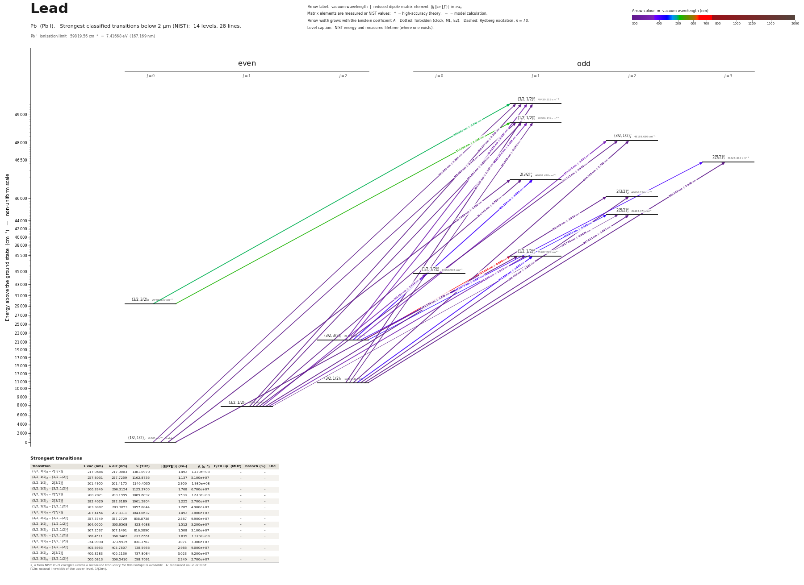

Lead energy level diagram
Energy levels and transitions of neutral lead (Pb I): the 31 strongest classified lines below 2 µm from the NIST Atomic Spectra Database and the 15 levels they connect, each line with its vacuum wavelength, frequency and, for 29 of them, the reduced dipole matrix element derived from the NIST transition rate. Measured lifetimes, transition rates, hyperfine constants and isotope shifts from the literature are included, each with its citation.
Hover a line or a level to isolate it, click to keep it selected. Scroll to zoom, drag to move.

Download: diagram (PDF) diagram (SVG) transitions (CSV) levels (CSV) source code

Key transitions of lead
| Transition | λ vac (nm) | λ air (nm) | ν (THz) | |⟨J‖er‖J′⟩| (ea₀) | A (s⁻¹) | Γ/2π up. (MHz) | branch (%) | Use |
|---|---|---|---|---|---|---|---|---|
| (1/2,1/2)0 – (1/2,1/2)°1 | 283.3887 | 283.3053 | 1057.8844 | 1.285 | 4.900e+07 | 26.53 | 29.4 | ground-state resonance line |
| (3/2,1/2)1 – (1/2,1/2)°1 | 364.0605 | 363.9568 | 823.4688 | 1.512 | 3.200e+07 | 26.53 | 19.2 | isotope shifts and hyperfine structure measured by Dopple… |
| (3/2,1/2)1 – (1/2,1/2)°0 | 368.4511 | 368.3462 | 813.6561 | 1.839 | 1.370e+08 | 23.41 | 100 | proposed laser-cooling / magneto-optical-trap cycling line |
| (3/2,1/2)2 – (1/2,1/2)°1 | 405.8953 | 405.7807 | 738.5956 | 2.985 | 9.000e+07 | 26.53 | 54 | the Pb I line used for lead abundances in stellar spectra |
| (1/2,1/2)0 – (3/2,1/2)2 | 938.9383 | 938.6807 | 319.2888 | – | – | – | – | electric-quadrupole line measured by Faraday-rotation spe… |
| (1/2,1/2)0 – (3/2,1/2)1 | 1278.8930 | 1278.5432 | 234.4156 | – | 7.190e+00 | 1.137e-06 | 100 | magnetic-dipole line used for parity-nonconservation opti… |
λ, ν from NIST level energies unless a measured frequency for this isotope is available. A: measured value or NIST. Γ/2π: natural linewidth of the upper level, 1/(2πτ).
207Pb hyperfine structure (I = 1/2)
| Level | A (MHz) | B (MHz) | Shift of each F level from the centre of gravity (MHz) |
|---|---|---|---|
| (3/2,1/2)1 | -2389.4(7) | – | F=1/2: +2389.40 F=3/2: -1194.70 |
| (3/2,1/2)2 | 2600.8(9) | – | F=3/2: -3901.20 F=5/2: +2600.80 |
| (3/2,3/2)2 | 609.820(8) | – | F=3/2: -914.73 F=5/2: +609.82 |
| (1/2,1/2)°1 | 8802.0(16) | – | F=1/2: -8802.00 F=3/2: +4401.00 |
| 2[5/2]°2 | 3094(9) | – | F=3/2: -4641.00 F=5/2: +3094.00 |
| 2[3/2]°2 | -1456.000 | – | F=3/2: +2184.00 F=5/2: -1456.00 |
| 2[3/2]°1 | -2884.000 | – | F=1/2: +2884.00 F=3/2: -1442.00 |
| 2[5/2]°3 | 2072(8) | – | F=5/2: -4144.00 F=7/2: +3108.00 |
| (3/2,1/2)°2 | 1734.000 | – | F=3/2: -2601.00 F=5/2: +1734.00 |
Measured A, B constants; sources in the data file.
Isotope shifts
| Transition | λ vac (nm) | Isotopes | Shift (MHz) |
|---|---|---|---|
| (1/2,1/2)0 – (1/2,1/2)°1 | 283.389 | 204-208 | -4212.0(25) |
| (1/2,1/2)0 – (1/2,1/2)°1 | 283.389 | 206-208 | -2226.6(25) |
| (1/2,1/2)0 – (1/2,1/2)°1 | 283.389 | 207-208 | -1390.0(25) |
| (3/2,1/2)2 – (1/2,1/2)°1 | 405.895 | 206-208 | -2428.00 |
| (3/2,1/2)2 – (1/2,1/2)°1 | 405.895 | 204-208 | -4587.00 |
| (3/2,1/2)2 – (1/2,1/2)°1 | 405.895 | 207-208 | -1569.00 |
| (1/2,1/2)0 – (3/2,1/2)1 | 1278.893 | 206-208 | 220.4(15) |
| (1/2,1/2)0 – (3/2,1/2)1 | 1278.893 | 207-208 | 138.0(17) |
Shift = ν(first isotope) − ν(second isotope).
Listed Pb transitions below 2 µm
| Lower level | Upper level | λ vacuum (nm) | λ air (nm) | ν (THz) | Type | |⟨J‖er‖J′⟩| (ea₀) | A (s⁻¹) | Branching (%) | Source of matrix element / A |
|---|---|---|---|---|---|---|---|---|---|
| (1/2,1/2)0 | (3/2,1/2)°1 | 202.2669 | 202.2018 | 1482.1624 | E1 | 0.269 NIST | 5.900e+06 NIST | 2.89 | NIST ASD (accuracy C+) |
| (1/2,1/2)0 | (1/2,1/2)°1 | 205.3939 | 205.3282 | 1459.5976 | E1 | 0.362 NIST | 1.020e+07 NIST | – | NIST ASD (accuracy C) |
| (1/2,1/2)0 | 2[3/2]°1 | 217.0684 | 217.0003 | 1381.0970 | E1 | 1.492 NIST | 1.470e+08 NIST | – | NIST ASD (accuracy C+) |
| (3/2,1/2)1 | (3/2,1/2)°1 | 240.2671 | 240.1939 | 1247.7468 | E1 | 0.702 NIST | 2.400e+07 NIST | 11.8 | NIST ASD (accuracy C) |
| (3/2,1/2)1 | (1/2,1/2)°0 | 244.4569 | 244.3829 | 1226.3610 | E1 | 0.650 theory | 5.860e+07 theory | – | Maser, Hoenig, Wang, Rupasinghe, Porsev, Safronova, Majumder, "High-precision measurement… |
| (3/2,1/2)1 | (1/2,1/2)°1 | 244.6922 | 244.6181 | 1225.1820 | E1 | 0.635 NIST | 1.860e+07 NIST | – | NIST ASD (accuracy C+) |
| (3/2,1/2)1 | (3/2,1/2)°2 | 247.7126 | 247.6378 | 1210.2432 | E1 | 0.988 NIST | 2.600e+07 NIST | – | NIST ASD (accuracy C+) |
| (3/2,1/2)2 | (3/2,1/2)°1 | 257.8031 | 257.7259 | 1162.8736 | E1 | 1.137 NIST | 5.100e+07 NIST | 25 | NIST ASD (accuracy C+) |
| (3/2,1/2)1 | 2[3/2]°1 | 261.4435 | 261.3655 | 1146.6815 | E1 | 0.763 NIST | 2.200e+07 NIST | – | NIST ASD (accuracy C+) |
| (3/2,1/2)1 | 2[3/2]°2 | 261.4955 | 261.4175 | 1146.4535 | E1 | 2.956 NIST | 1.980e+08 NIST | – | NIST ASD (accuracy C+) |
| (3/2,1/2)2 | (1/2,1/2)°1 | 262.9046 | 262.8262 | 1140.3088 | E1 | 0.332 NIST | 4.100e+06 NIST | – | NIST ASD (accuracy D) |
| (3/2,1/2)1 | 2[5/2]°2 | 265.7884 | 265.7094 | 1127.9364 | E1 | 0.0674 NIST | 9.800e+04 NIST | – | NIST ASD (accuracy C+) |
| (3/2,1/2)2 | (3/2,1/2)°2 | 266.3946 | 266.3154 | 1125.3700 | E1 | 1.768 NIST | 6.700e+07 NIST | – | NIST ASD (accuracy C+) |
| (3/2,1/2)2 | 2[5/2]°3 | 280.2821 | 280.1995 | 1069.6097 | E1 | 3.500 NIST | 1.610e+08 NIST | – | NIST ASD (accuracy C+) |
| (3/2,1/2)2 | 2[3/2]°2 | 282.4020 | 282.3189 | 1061.5804 | E1 | 1.225 NIST | 2.700e+07 NIST | – | NIST ASD (accuracy C+) |
| (1/2,1/2)0 | (1/2,1/2)°1 | 283.3887 | 283.3053 | 1057.8844 | E1 | 1.285 NIST | 4.900e+07 NIST | 29.4 | NIST ASD (accuracy C+) |
| (3/2,1/2)2 | 2[5/2]°2 | 287.4154 | 287.3311 | 1043.0632 | E1 | 1.492 NIST | 3.800e+07 NIST | – | NIST ASD (accuracy C+) |
| (3/2,3/2)2 | (3/2,1/2)°1 | 357.3749 | 357.2729 | 838.8738 | E1 | 2.587 NIST | 9.900e+07 NIST | 48.5 | NIST ASD (accuracy C+) |
| (3/2,1/2)1 | (1/2,1/2)°1 | 364.0605 | 363.9568 | 823.4688 | E1 | 1.512 NIST | 3.200e+07 NIST | 19.2 | NIST ASD (accuracy C+) |
| (3/2,3/2)2 | (1/2,1/2)°1 | 367.2537 | 367.1491 | 816.3090 | E1 | 1.508 NIST | 3.100e+07 NIST | – | NIST ASD (accuracy C) |
| (3/2,1/2)1 | (1/2,1/2)°0 | 368.4511 | 368.3462 | 813.6561 | E1 | 1.839 NIST | 1.370e+08 NIST | 100 | NIST ASD (accuracy B) |
| (3/2,3/2)2 | (3/2,1/2)°2 | 374.0998 | 373.9935 | 801.3702 | E1 | 3.071 NIST | 7.300e+07 NIST | – | NIST ASD (accuracy B) |
| (3/2,3/2)2 | 2[5/2]°3 | 402.0768 | 401.9632 | 745.6099 | E1 | 0.887 NIST | 3.500e+06 NIST | – | NIST ASD (accuracy C+) |
| (3/2,1/2)2 | (1/2,1/2)°1 | 405.8953 | 405.7807 | 738.5956 | E1 | 2.985 NIST | 9.000e+07 NIST | 54 | NIST ASD (accuracy C+) |
| (3/2,3/2)2 | 2[3/2]°1 | 406.3283 | 406.2136 | 737.8084 | E1 | 3.023 NIST | 9.200e+07 NIST | – | NIST ASD (accuracy B) |
| (3/2,3/2)2 | 2[5/2]°2 | 416.9208 | 416.8033 | 719.0634 | E1 | 0.463 NIST | 1.200e+06 NIST | – | NIST ASD (accuracy D+) |
| (3/2,3/2)0 | (3/2,1/2)°1 | 500.6813 | 500.5416 | 598.7691 | E1 | 2.240 NIST | 2.700e+07 NIST | 13.2 | NIST ASD (accuracy C+) |
| (3/2,3/2)0 | (1/2,1/2)°1 | 520.2886 | 520.1437 | 576.2042 | E1 | 1.709 NIST | 1.400e+07 NIST | – | NIST ASD (accuracy C) |
| (3/2,3/2)2 | (1/2,1/2)°1 | 723.0958 | 722.8966 | 414.5958 | E1 | 0.690 NIST | 8.500e+05 NIST | 0.51 | NIST ASD (accuracy C+) |
| (1/2,1/2)0 | (3/2,1/2)2 | 938.9383 | 938.6807 | 319.2888 | E2 | – | – | – | – |
| (1/2,1/2)0 | (3/2,1/2)1 | 1278.8930 | 1278.5432 | 234.4156 | M1 | – | 7.190e+00 theory | 100 | Zheng, Wang, Verma, Wang, Langin, DeMille, "Simulated Laser Cooling and Magneto-Optical T… |
Reduced dipole matrix elements follow the convention A = ω³|d|²/(3πε₀ħc³(2J′+1)), with J′ the upper level. Tags show where a number comes from: measured, NIST compilation, high-accuracy theory, or a model calculation.
Pb energy levels
Pb⁺ ionisation limit 59819.56 cm⁻¹ = 7.41668 eV (167.169 nm)
Sources
- Biémont, Garnir, Palmeri, Li, Svanberg, Mon. Not. R. Astron. Soc. 312, 116 (2000) (time-r…
- Bouazza, Gough, Hannaford, Lowe, Wilson, Phys. Rev. A 63, 012516 (2000) (Doppler-free sat…
- Lurio, Landman, J. Opt. Soc. Am. 60, 759 (1970), as quoted in Tables II and VI of Porsev …
- Maser, Hoenig, Wang, Rupasinghe, Porsev, Safronova, Majumder, "High-precision measurement…
- NIST ASD
- NIST ASD level energies
- Porsev, Kozlov, Safronova, Tupitsyn, Phys. Rev. A 93, 012501 (2016), arXiv:1510.06679, Ta…
- Wasowicz, Drozdowski, Kwela, Phys. Scr. 71, 274 (2005); 72, 200 (2005); Eur. Phys. J. Spe…
- Zheng, Wang, Verma, Wang, Langin, DeMille, "Simulated Laser Cooling and Magneto-Optical T…
- Zheng, Wang, Verma, Wang, Langin, DeMille, "Simulated Laser Cooling and Magneto-Optical T…
LS labels follow Porsev et al.; the NIST jj / J1K labels are given after the '=' sign (mapping checked against the energies in Porsev's Table V). Entries 'rme_J_ea0' are CALCULATED (CI+all-order) and marked theory; experiment-derived matrix elements quoted second-hand are kept under 'rme_J_ea0_reported' because they disagree with each other. Isotope shifts are nu(first) - nu(second); the 1.28 um M1 line shifts are positive as printed (opposite sign to the 283.3 nm line). The 405.78 nm shifts are derived from wavenumbers printed in a stellar-abundance paper that copied Bouazza's Table I, good to about 3 MHz. The three lifetimes of Biémont et al. were read on the publisher's HTML page by an automated reader (the paper's tables are images) and should be checked against the PDF. 'E2_rme_ea0sq' is an electric-quadrupole amplitude, not a dipole matrix element.
Atoms with measured data
- Lithium-632 levels, 85 lines
- Lithium-732 levels, 85 lines
- Beryllium-917 levels, 26 lines
- Sodium-2336 levels, 106 lines
- Magnesium-2418 levels, 61 lines
- Magnesium-2518 levels, 61 lines
- Potassium-3934 levels, 84 lines
- Potassium-4034 levels, 84 lines
- Potassium-4134 levels, 84 lines
- Calcium-4035 levels, 61 lines
- Calcium-4335 levels, 61 lines
- Chromium-5256 levels, 87 lines
- Chromium-5356 levels, 87 lines
- Rubidium-8536 levels, 94 lines
- Rubidium-8736 levels, 94 lines
- Strontium-8440 levels, 70 lines
- Strontium-8640 levels, 70 lines
- Strontium-8740 levels, 70 lines
- Strontium-8840 levels, 70 lines
- Cadmium-11115 levels, 21 lines
- Cadmium-11315 levels, 21 lines
- Cadmium-11415 levels, 21 lines
- Caesium-13331 levels, 79 lines
- Barium-13744 levels, 89 lines
- Barium-13844 levels, 89 lines
- Dysprosium-16139 levels, 55 lines
- Dysprosium-16239 levels, 55 lines
- Dysprosium-16339 levels, 55 lines
- Dysprosium-16439 levels, 55 lines
- Erbium-16673 levels, 90 lines
- Erbium-16773 levels, 90 lines
- Erbium-16873 levels, 90 lines
- Thulium-16972 levels, 73 lines
- Ytterbium-17118 levels, 26 lines
- Ytterbium-17318 levels, 26 lines
- Ytterbium-17418 levels, 26 lines
- Mercury-19927 levels, 47 lines
- Mercury-20127 levels, 47 lines
- Mercury-20227 levels, 47 lines